📊 测试报告展示
测机管理系统 - 我的培训模块测试报告
测试报告：TC-COURSE-018 批量导出 - 未选择数据
测试结果统计
| 用例 ID | 用例名称 | 执行时间 | 关联 BugID | 状态 |
|---|---|---|---|---|
| TC-COURSE-018 | 批量导出 - 未选择数据 | 2026-05-19 14:45 | BUG-001 | 失败 |
Bug 报告
BUG-001: 批量导出未校验选中数据
P2 - 一般问题描述: 批量导出功能未校验选中数据，未选择任何记录时仍可导出
复现步骤:
- 点击"课程进度"标签页
- 确保没有勾选任何课程记录
- 点击"批量导出"按钮
实际结果: 系统显示提示："已导出文件：2026 年 05 月 19 日培训学习报告.xlsx"，文件被下载到本地
期望结果: 系统应该提示用户先选择要导出的数据，不应该执行导出操作
// 建议修复方案
handleBatchExport() {
if (this.selectedRows.length === 0) {
this.$modal.msgWarning('请选择要导出的数据');
return;
}
// 执行导出操作
}
测试截图
步骤 1 - 登录页面
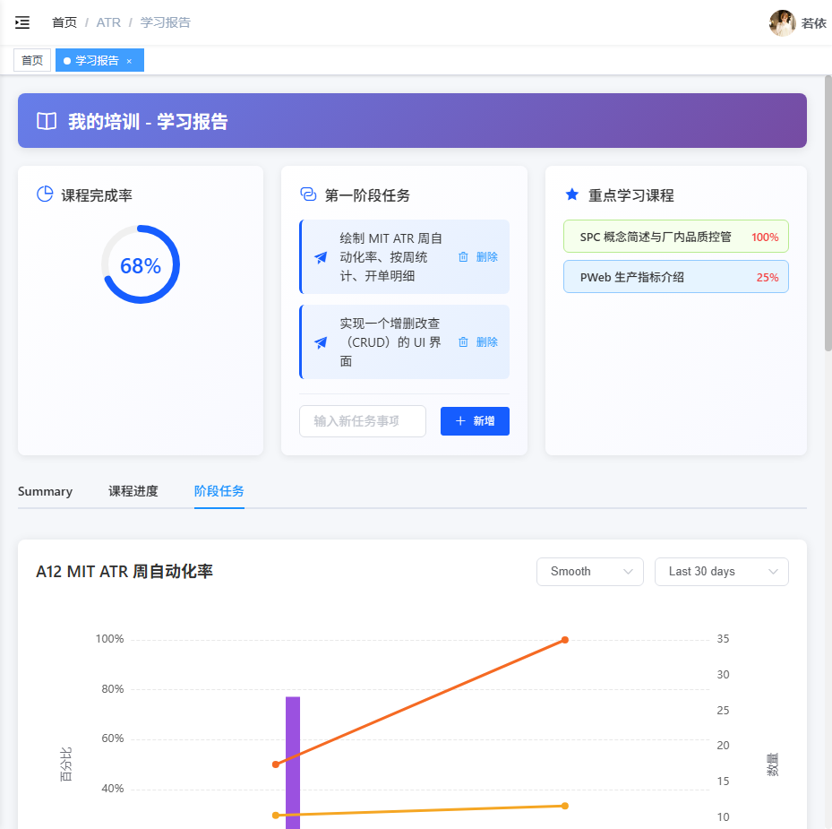
登录系统进入测机管理系统
步骤 2 - 课程进度页面（未选择数据）
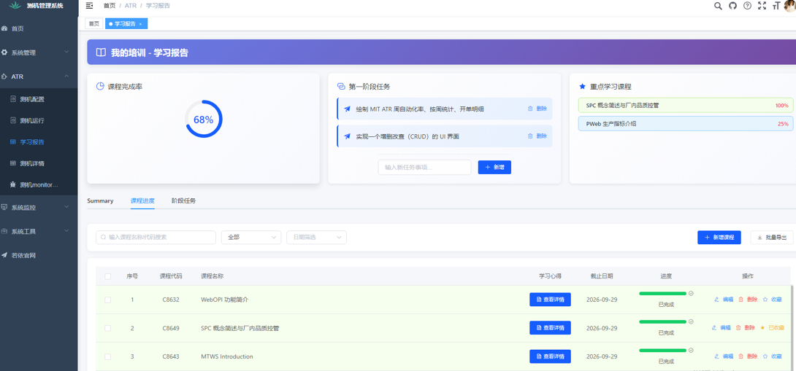
课程进度页面，未选择任何课程记录
步骤 3 - 点击批量导出后（直接导出文件）
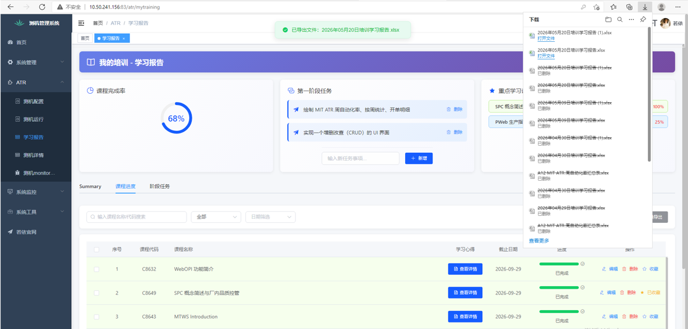
未选择数据时点击批量导出，系统仍执行导出操作
改进建议
- 为批量导出功能添加选中数据校验
- 统一所有批量操作的前端校验逻辑（批量删除、批量导出等）
- 优化用户提示信息，使其更加明确
测试报告：TC-OVERVIEW-002 课程完成率卡片点击滚动到表格
测试步骤执行结果
| 步骤 | 操作 | 预期结果 | 实际结果 | 状态 |
|---|---|---|---|---|
| 1 | 打开页面 | 页面成功加载 | 页面成功打开，自动重定向到登录页 | ✅ 通过 |
| 2 | 登录系统 | 登录成功 | 登录成功，进入我的培训页面 | ✅ 通过 |
| 3 | 找到课程完成率卡片 | 找到卡片 | 找到课程完成率卡片，显示完成率为 68% | ✅ 通过 |
| 4 | 点击卡片 | 页面切换到课程进度 Tab | 点击后页面无明显变化，仍停留在 Summary 选项卡 | ❌ 失败 |
| 5 | 验证滚动效果 | 页面滚动到表格位置 | 页面未自动切换到"课程进度"Tab，也未滚动到表格位置 | ❌ 失败 |
Bug 报告
BUG-001: 课程完成率卡片点击后未切换到课程进度 Tab
P2 - 一般问题描述: 点击课程完成率卡片后，页面没有自动切换到"课程进度"Tab，也没有滚动到表格位置。
// 当前实现 (index.vue:1232)
scrollToTable() {
this.$refs.tableContainer.scrollIntoView({ behavior: 'smooth' })
}
// 建议修复
scrollToTable() {
// 先切换到课程进度 Tab
this.activeTab = 'courseProgress'
// 等待 DOM 更新后滚动到表格
this.$nextTick(() => {
this.$refs.tableContainer.scrollIntoView({ behavior: 'smooth' })
})
}
影响范围: 所有使用课程完成率卡片快捷导航功能的用户，用户体验受损，快捷导航功能失效
测试截图
步骤 1 - 初始页面状态
我的培训页面初始状态，显示数据概览卡片
步骤 2 - 点击课程完成率卡片后
点击课程完成率卡片后，页面未切换到课程进度 Tab
测试报告：TC-OVERVIEW-003 第一阶段任务列表显示
测试步骤执行结果
| 步骤 | 操作 | 预期结果 | 实际结果 | 状态 |
|---|---|---|---|---|
| 1 | 登录系统 | 成功登录到系统 | 成功登录，页面正常加载 | ✅ 通过 |
| 2 | 在"数据概览"页面查看"第一阶段任务"列表 | 列表正常显示 | 列表正常显示 2 条任务 | ✅ 通过 |
| 3 | 验证列表显示的内容：任务名称、任务状态、完成进度 | 显示任务名称、状态、进度 | 仅显示任务名称，未显示任务状态和完成进度 | ⚠️ 部分通过 |
| 4 | 验证列表数据与"阶段任务"标签页中的数据一致 | 数据一致 | "阶段任务"标签页显示的是周数据表格，不是第一阶段任务列表 | ⚠️ 部分通过 |
问题汇总
UI-001: 第一阶段任务列表缺少状态和进度显示
P2 - 一般问题描述: 第一阶段任务列表仅显示任务名称，没有显示任务状态和完成进度字段
影响: 用户无法直观了解任务的执行状态和进度
建议: 在任务数据结构中增加 status 和 progress 字段，并在 UI 中显示
// 当前实现 (index.vue:631-634)
phaseTasks: [
{ name: '绘制 MIT ATR 周自动化率、按周统计、开单明细' },
{ name: '实现一个增删改查（CRUD）的 UI 界面' }
]
// 建议改进
phaseTasks: [
{
name: '绘制 MIT ATR 周自动化率、按周统计、开单明细',
status: '进行中',
progress: 80
},
{
name: '实现一个增删改查（CRUD）的 UI 界面',
status: '已完成',
progress: 100
}
]
UI-002: "阶段任务"标签页内容与第一阶段任务卡片不一致
P2 - 一般问题描述: "阶段任务"标签页显示的是"A12 MIT ATR 周自动化率"的周数据表格，而不是第一阶段任务列表
影响: 用户无法在阶段任务标签页查看和管理第一阶段任务
建议: 在"阶段任务"标签页添加第一阶段任务的完整管理界面
测试截图
步骤 1 - 登录后数据概览页面
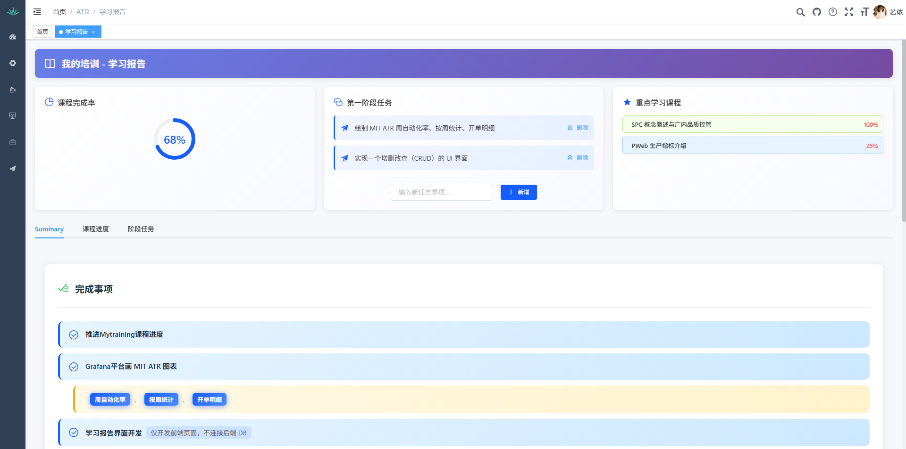
登录后数据概览页面全貌
步骤 2 - 第一阶段任务卡片特写
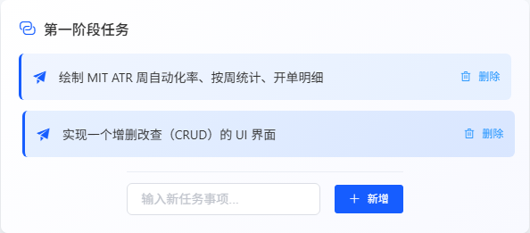
第一阶段任务卡片特写，显示 2 条任务
步骤 3 - 任务列表内容验证
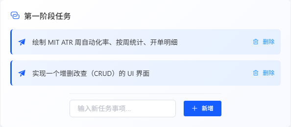
任务列表内容验证，仅显示任务名称
测试结论
- 基本功能: ✅ 正常 - 任务列表可以正常显示和删除
- 数据完整性: ⚠️ 不完整 - 缺少状态和进度字段
- 数据一致性: ⚠️ 不一致 - 标签页内容与卡片内容不匹配
发版建议: ✅ 可以发布 - 当前功能不影响核心业务流程
建议改进: 后续迭代中完善任务状态和进度显示功能
测试报告：TC-WEEKLY-002 时间范围筛选 - Last 30 days
测试步骤执行结果
| 步骤 | 操作 | 预期结果 | 实际结果 | 状态 |
|---|---|---|---|---|
| 1 | 登录并导航到阶段任务页面 | 页面加载成功 | 页面成功加载，显示 18 条周数据记录 | ✅ 通过 |
| 2 | 查看时间范围筛选下拉框选项 | 显示时间范围选项列表 | 下拉框显示 4 个选项：Last 30 days, Last 90 days, Last 6 months, Last 1 year | ✅ 通过 |
| 3 | 选择"Last 30 days"选项并验证数据 | 表格只显示最近 30 天的数据（约 4-5 条） | 表格仍显示全部 18 条数据，未进行筛选 | ❌ 失败 |
数据对比分析
| 状态 | 记录数 | 日期范围 |
|---|---|---|
| 筛选前（全部数据） | 18 条 | W2601 (2026-01-04) 到 W2618 (2026-05-03) |
| 预期（Last 30 days） | 约 4-5 条 | 2026-04-19 之后 (W2616-W2618) |
| 实际（未筛选） | 18 条 | W2601 (2026-01-04) 到 W2618 (2026-05-03) |
Bug 报告
BUG-001: 时间范围筛选功能未生效
P1 - 严重问题描述: 选择"Last 30 days"选项后，表格数据未进行筛选，仍显示全部 18 条记录
可能原因:
- 前端未实现筛选逻辑
- 筛选条件未传递到后端 API
- 后端 API 未处理时间范围参数
注意: 选择时间范围选项时，未观察到新的 API 请求，表明筛选逻辑可能仅在前端实现但未正确执行。
测试截图
步骤 1 - 登录后的页面
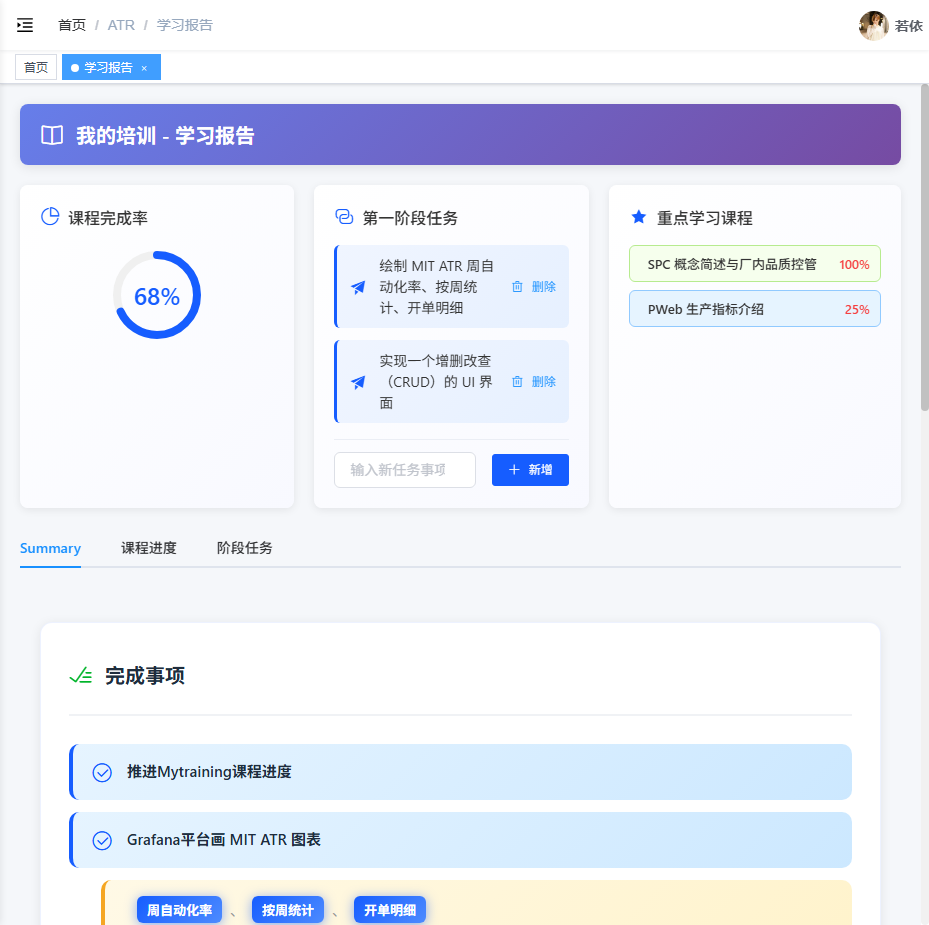
登录系统后进入我的培训页面
步骤 2 - 阶段任务页面（筛选前）
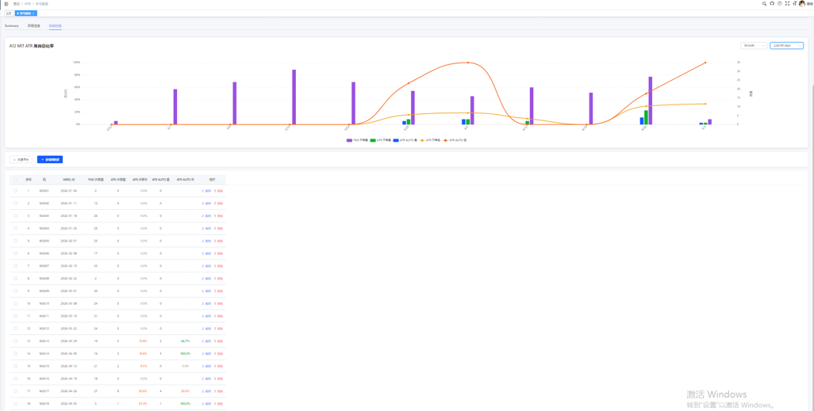
阶段任务页面，显示全部 18 条数据记录
步骤 3 - 选择 Last 30 days 后

选择"Last 30 days"后，表格仍显示全部 18 条数据，未进行筛选
发版建议
☑ 修复 P0 和 P1 级 Bug 后可以发布
理由: 时间范围筛选是核心功能，筛选功能失效会影响用户查看特定时间段数据的需求，建议修复后再发布。
测试报告：TC-WEEKLY-007 新增周数据重复数据校验
测试结果统计
| 用例 ID | 用例名称 | 执行时间 | 状态 |
|---|---|---|---|
| TC-WEEKLY-007 | 新增周数据重复数据校验 | 2026-05-19 15:54-15:58 | ❌ 失败 |
详细测试步骤执行结果
| 步骤 | 操作描述 | 预期结果 | 实际结果 | 状态 |
|---|---|---|---|---|
| 1 | 登录系统后导航到阶段任务页面 | 成功进入阶段任务页面 | 成功进入，表格显示 13 行数据 | ✅ 通过 |
| 2 | 点击"新增周数据"按钮 | 打开新增对话框 | 对话框成功打开 | ✅ 通过 |
| 3 | 选择已存在的周 W2613 | 周字段显示 W2613，日期联动 | 周字段显示 W2613，日期联动为 2026-03-30 | ✅ 通过 |
| 4 | 点击"确定"按钮 | 显示错误提示"该周数据已存在" | 未显示错误提示，系统直接创建了重复的 W2613 记录 | ❌ 失败 |
| 5 | 再次新增，输入数据 | 输入成功 | 输入成功，系统显示错误提示 | ✅ 通过 |
| 6 | 点击"确定"按钮 | 显示错误提示，阻止提交 | 显示错误提示，但确定按钮仍可点击 | ⚠️ 部分通过 |
测试截图
步骤 1 - 阶段任务页面
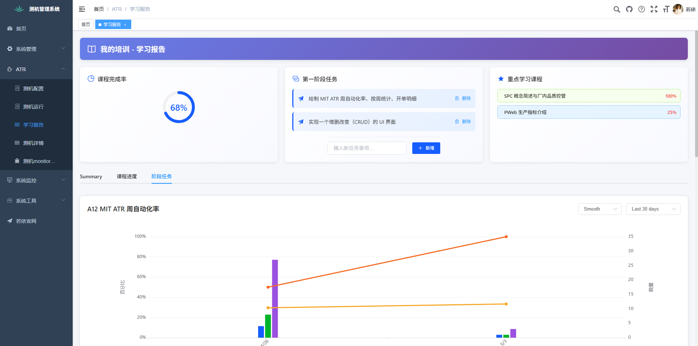
登录系统后导航到阶段任务页面，表格显示 13 行数据
步骤 2 - 新增对话框
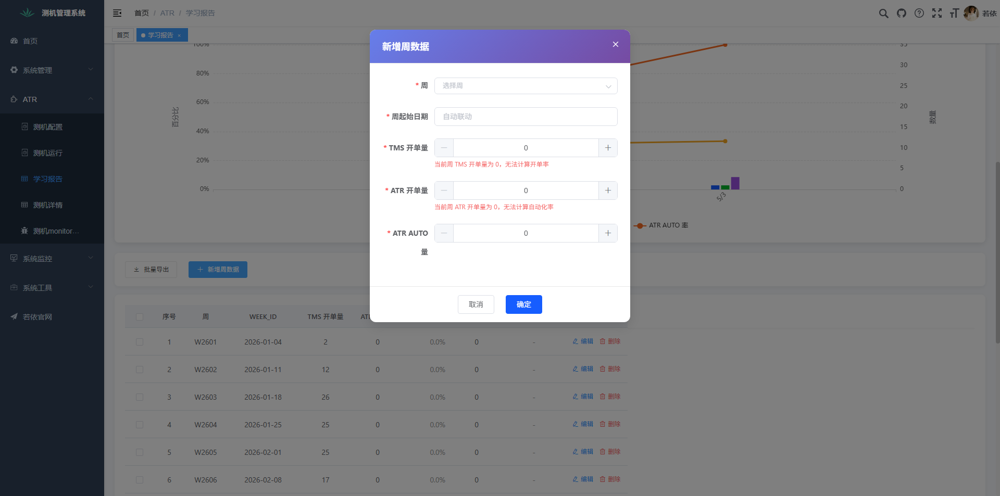
点击"新增周数据"按钮后打开的新增对话框
步骤 3 - 重复校验提示
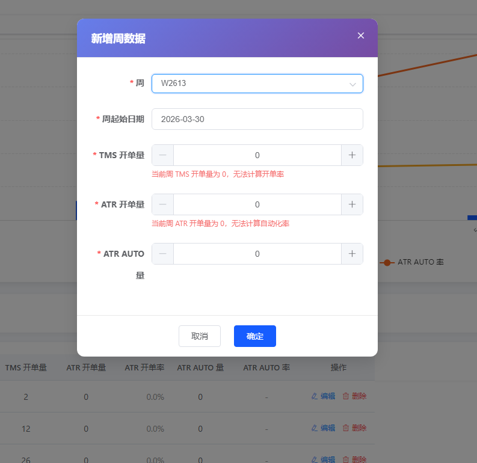
选择已存在的周 W2613 后，系统未显示重复校验提示，且确定按钮仍可点击
步骤 7 - 错误提示
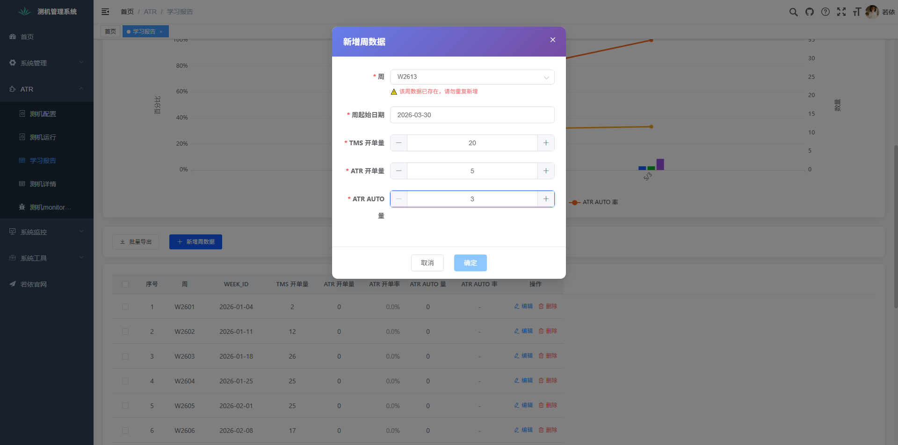
输入开单量数据，显示重复数据错误提示，确定不可点击
Bug 报告
BUG-001: 新增周数据重复校验功能失效
P0 - 阻断性问题描述: 新增周数据时，选择已存在的周（W2613）点击确定，系统未进行重复校验，直接创建了重复记录
复现步骤:
- 导航到阶段任务页面
- 点击"新增周数据"按钮
- 在周选择框中选择已存在的周 W2613
- 点击"确定"按钮
实际结果: 系统未显示错误提示，直接创建了一条重复的 W2613 记录（第 14 行，日期 2026-03-30，所有值为 0）
影响范围: 所有使用"新增周数据"功能的用户，会导致数据库中出现重复的周数据记录，影响数据统计的准确性
BUG-002: 重复数据提示后确定按钮未禁用
P1 - 严重问题描述: 显示重复数据错误提示后，确定按钮未禁用，用户仍可点击提交
期望结果: 显示错误提示后，确定按钮应自动禁用，防止用户误提交
改进建议
- 立即修复: 在保存接口中添加 WEEK_ID 唯一性校验
- 前端优化: 选择周字段后立即校验并显示结果
- UI 改进: 显示错误提示时禁用确定按钮
- 数据清理: 清理已产生的重复 W2613 记录（第 14 行）
- 数据库约束: 在 WEEK_ID 字段上添加唯一索引防止未来产生重复数据
测试结论
不合格 - 存在 P0 级阻断性 Bug
测试用例 TC-WEEKLY-007 执行结果为 ❌ 失败。系统存在严重的数据完整性问题，允许创建重复的周数据记录。建议立即修复后再进行回归测试。